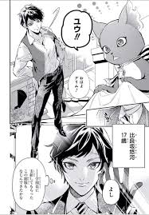
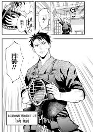
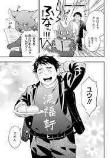

A história de Twisted Wonderland tem início quando o personagem principal (personagem sem gênero) é convocado para outro universo através de um espelho mágico. Com isso, ele chega a uma escola de treinamento de magia, a Night Ravens College e começa a conhecer os alunos da escola enquanto tenta voltar para casa.
Os exemplos de personagens Overblots enfrentados na história principal , geralmente pelo chefe do livro sucumbindo ao blot devido aos eventos que acontecem ao longo do livro. Até agora, esses monstros overblot são baseados em cada um dos vilões clássicos da Disney,.
Os Overblots são seus sentimentos negativos se juntando à sua magia, fazendo você virar uma marionete de um monstro de gosma negra. representando seus maiores problema, inseguranças e medos.
O personagem principal somo nós, que não é apresentado o nosso físico no jogo, mas no mangá podemos ver com muita clareza como nos parecemos, e os criadores decidiram nos dar três personagens para dar uma variada e fazer um foreshadowing com os líderes dos dormitórios e seus problems. Ex:O líder Azul Ashengrotto no passado foi bullinado por seu físico mais gordinnho, fazendo ele ter traumas com o antigo corpo, agora que ele está mais "aceitavél" nos olhos dos outros aparece o personagem principal, Yuuta, que era ajudante de seu pai padeiro, que tem o físico muito parecido com o de Azul
Yuuka
Yuuken
Yuuta
